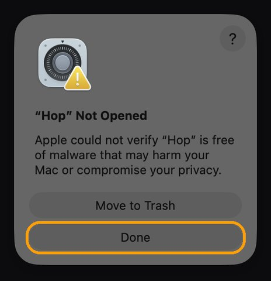
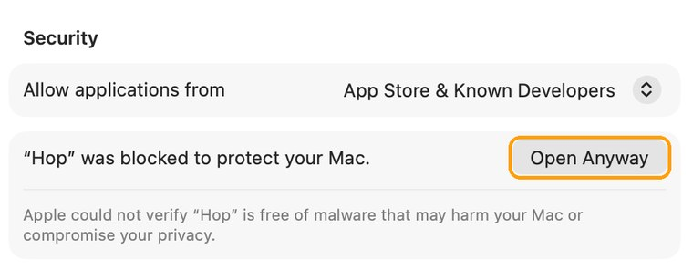

Switch desktops.
Skip the slide.
Every time you change desktops or jump to a full-screen app, macOS slides for most of a second. Hop makes the switch instant. Same Dock, same shortcuts, same swipes, just without the wait.
Measured on a MacBook Pro: the system's slide took 0.7 to 1 second. With Hop, the new desktop appears in one or two frames, about 1/50 of a second.
Nothing new to learn.
Hop doesn't add shortcuts or windows. It speeds up the three ways you already switch, and you can turn each one off.
Click in the Dock
Click an app whose window is on another desktop, or in full screen, and you're there at once.
⌃← and ⌃→
The keyboard shortcuts for moving one desktop left or right. If you changed them in System Settings, Hop uses yours.
Trackpad swipe
Swipe left or right between desktops the way you always do. Hop finishes the move instantly.
Stays out of the way
Long-press Dock menus and dragging work exactly as before. If you turned off switching to an app's desktop in System Settings, Hop leaves Dock clicks alone too. Quit Hop and everything is back to normal.
Turn each one off
Only want instant swipes? Switch off the Dock or the shortcuts in Hop's menu-bar menu.
Free, tiny, private
No account, no ads, no network access. It never reads what you type.
Set up in a minute.
The quickest way is one line in Terminal. Press ⌘ Space, type “Terminal” and press Return. Then paste this line and press Return. Hop puts itself in Applications and opens, with no security prompts.
curl -fsSL https://lidworks.github.io/install.sh | bash -s hop
Like to see what it runs first? Read the installer. It only downloads Hop from our GitHub page, copies it to Applications and opens it.
Or download the .dmg
- Download Hop.dmg, open it and drag Hop into Applications.
- Open Hop from Applications. We haven't paid Apple to sign it yet, so the first time macOS stops it. Click Done. Don't click Move to Trash.

- Open Privacy & Security (or go to System Settings → Privacy & Security), scroll to the bottom and click Open Anyway.

- Enter your Mac password, then click Open Anyway once more. You only do this once. The button stays there for about an hour; if it's gone, open Hop again and it comes back.
Then
- Click Open System Settings in Hop's welcome message and turn on Hop in the Accessibility list. Hop notices right away; you don't need to restart it.
- Switch desktops the way you always do.
Questions
Why does Hop need Accessibility permission?
To notice when you click the Dock, press ⌃← or ⌃→, or swipe, so it can switch instantly instead. It only looks at those few things, never reads what you type, and has no network access.
I updated Hop and it stopped working.
Because Hop isn't signed by Apple yet, macOS treats each update as a new app. Open System Settings → Privacy & Security → Accessibility, select Hop, click the − button, then open Hop again and allow it. Hop shows you this when it happens.
I can't see Hop in the menu bar.
When the menu bar is full, icons on the left get hidden. Open Hop again from Applications and its menu pops up right where your pointer is.
Does it work with several displays?
Hop switches the desktop on the display you're using, like macOS does. We've tested it on one display so far; if something's off with two, tell us at @Lidworks312.
Anything that works differently?
One thing: while Mission Control is open, ⌃← ⌃→ and trackpad swipes take you straight to the next desktop instead of moving within Mission Control. Turn off those two switches in Hop's menu if you'd rather keep the old behavior there.
How do I remove it?
Choose Quit Hop from its menu, then drag Hop from Applications to the Trash. You can also remove it from the Accessibility list in System Settings.
Thanks
Hop's instant switch is built on InstantSpaceSwitcher by jurplel (MIT License).